A social study app for college students that makes the focus timer something other people can see. Sessions puts friends on a campus map while they work, lets anyone join a public or private session already in progress, and keeps streaks in front of the people who would actually notice them.
Most study apps give you a timer, a streak counter, and sometimes a leaderboard full of strangers. None of them account for why a student walks to the library at ten at night instead of working at their desk, which is that being near other people doing the same thing makes it easier to start and easier to keep going. That part of studying has no place in the software.
Studying alone
A timer running on a phone by itself is easy to cancel and easy to forget.
Streaks nobody sees
A counter only the user knows about stops carrying weight after a week or two.
No way to find each other
Study groups get arranged over text, and there is nowhere to check who is already working.
Research
How students already study on campus
I talked to classmates about where they study, who they go with, and what makes them actually show up. Almost none of their answers were about focus technique. They were about other people: who was there, who would notice if they left, and whether there was something already happening they could walk into.
01
Place is already the strategy
Students pick a library or a café for the room and the people in it, not the desk. Choosing where to sit is the thing a focus app is trying to replace.
02
Streaks need an audience
Everyone I asked had abandoned a streak in some app, and none of them could remember a single person noticing.
03
Joining is easier than planning
Agreeing on a time and a place over text is enough friction to kill a study session. Walking into one that has already started is not.
The Reframe
From a private timer to a visible one
I started by asking how to help someone focus for longer, and that question kept producing the same solo features every other app already ships. The more useful question was what changes when a timer is visible to other people. Once a session is something friends can see and join, it stops being a private promise and becomes a small event happening on campus.
Before
"Focus for 25 minutes."
A countdown with nothing behind it
After
"7 friends studying now."
A session other people can see and join
Principles
Rules I set before drawing screens
A social layer on top of studying can go wrong quickly. It turns competitive, or it gets noisy, or it shows more than a student meant to share. I wrote down three constraints early and used them to settle arguments with myself later.
The app never asks you to start
Friends and their sessions are visible on the map, but nothing about seeing them is framed as a prompt. There are no notifications telling a student that someone else is ahead of them.
Celebrate less than feels natural
Streaks, milestones, and challenges only interrupt when something real happened. If every finished session ends in confetti, none of it registers.
Public or private, decided up front
Every session is one or the other, chosen before the timer starts. Visibility is never a default a user has to go find and undo.
Process
Mapping every path through the app
Before drawing any screens I laid the whole product out as a flow: onboarding, starting a timer alone, finding a session on the map, joining one, and what happens when it ends. Writing it out this way made the gaps obvious, particularly around what a session looks like to everyone who is not in it. That question shaped most of the screens that followed.
System Design
A visual language borrowed from iOS
Sessions uses Helvetica Neue with soft blues, warm off-whites, and near-black text. Glass surfaces, gentle gradients, and pill-shaped controls keep it close enough to iOS that the first open feels familiar. The restraint is the point. This is an app students leave running next to their notes for hours, so it had to be quiet enough to live there.
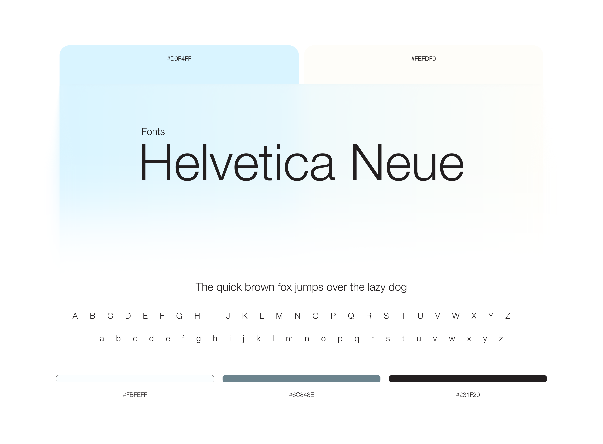
Final Walkthrough
Starting a session
Every session begins the same way. You pick public or private, set a length, and start. Once the timer is running the screen gives most of its interface back, which is deliberate: there should be nothing to check or adjust during the part where you are supposed to be working.
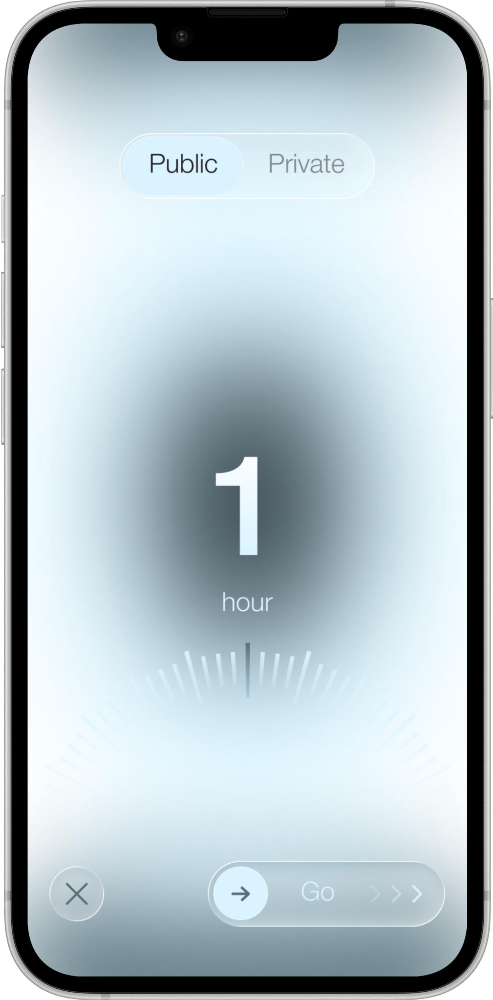
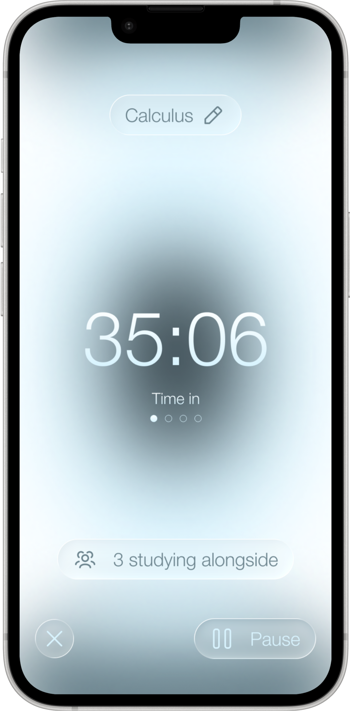
Seeing who is already studying
The map carries most of the app. Friends appear as pins with the time left on their timer, and group sessions show up as something you can join in a single tap. It answers a question students are already asking each other over text, which is whether anyone is out right now.
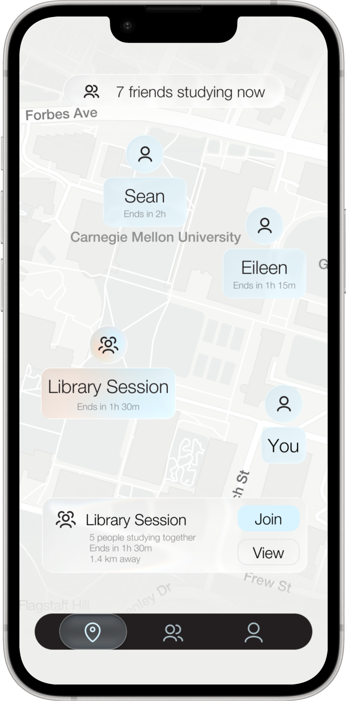
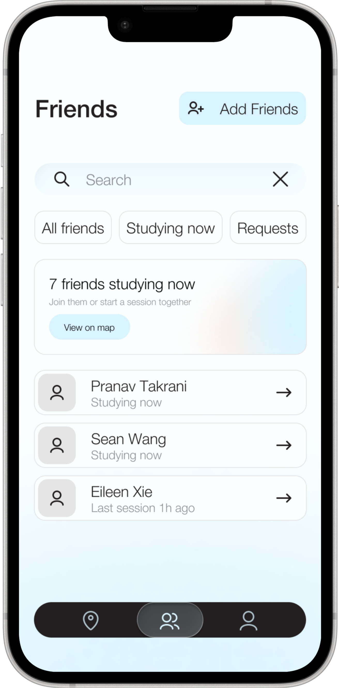
Adding friends
The map is empty without people on it, so adding friends needed to be quick without turning into a follower count. You can search, invite someone directly, or accept a suggestion built from mutual friends. There is no discovery feed and no public profile to maintain.
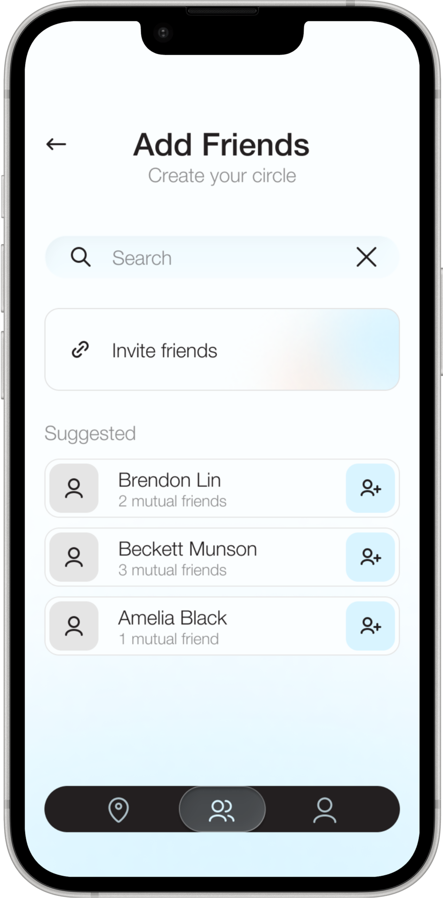
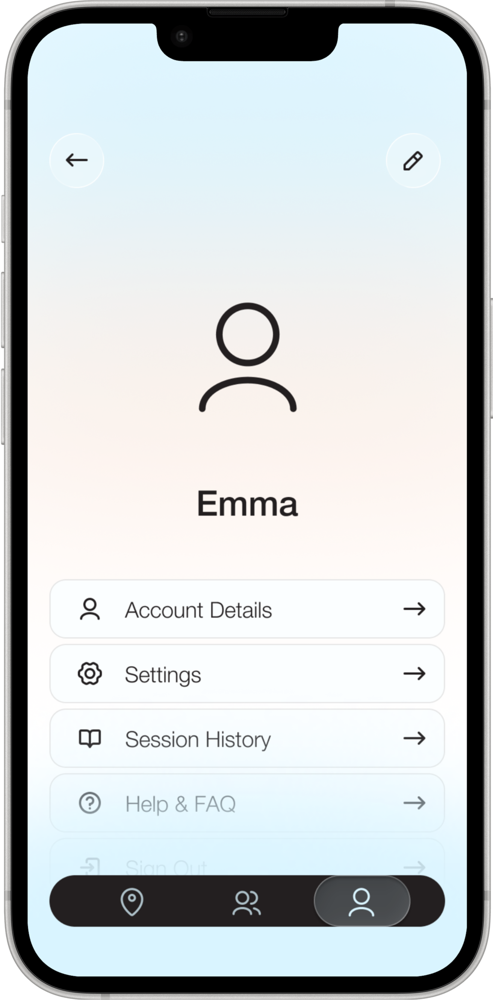
When a streak breaks
This is where an app's tone shows most clearly. The usual options are to scold the user or to quietly hide the loss, and neither one is honest. The screen states what happened, holds the number, and stops there.
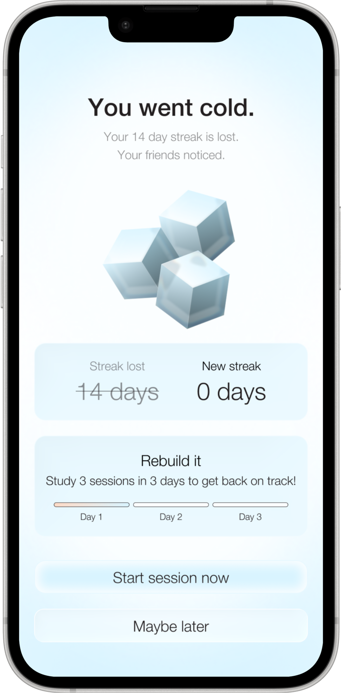
Challenges and history
Weekly challenges give a group something to work toward together, which is what gives the streak a reason to exist beyond a number going up. Session history is the opposite of that. It is a plain record of what a student actually put in, with no encouragement attached to it.
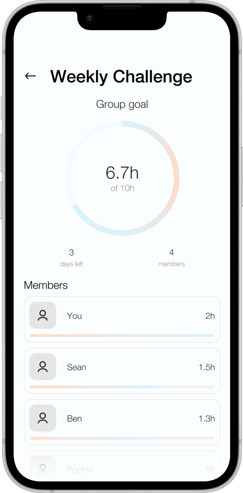
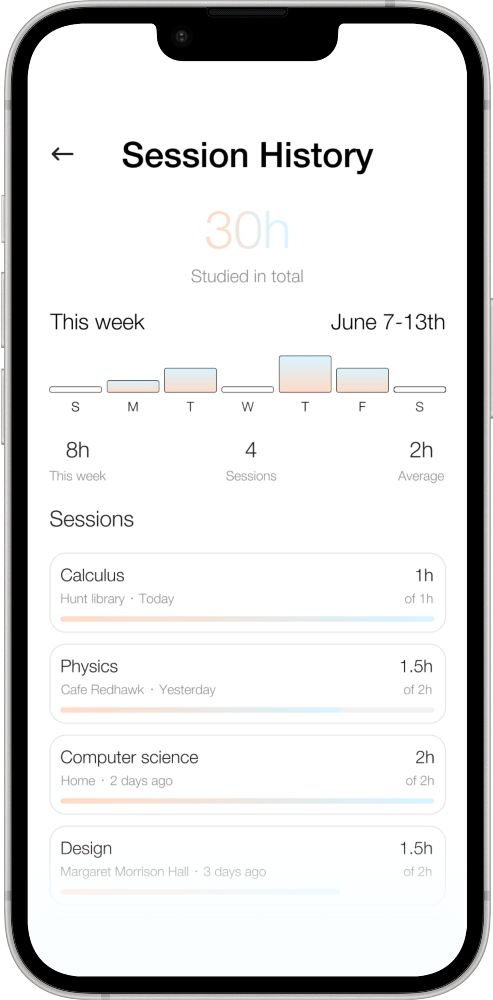
Onboarding
Setup asks what a student is taking, when they usually work, and what kind of room they prefer. None of it is framed as a personality quiz. The answers feed the session suggestions later, so the two minutes spent here pay for themselves inside the first week.
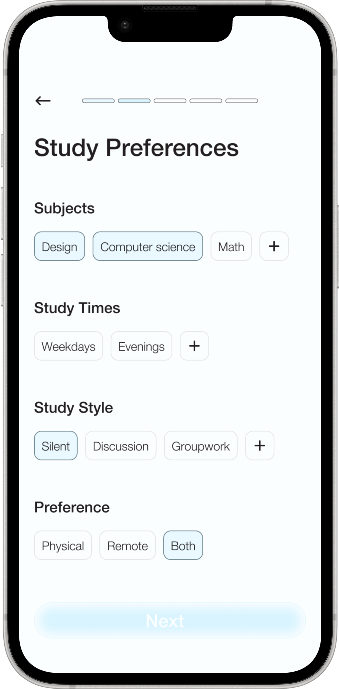
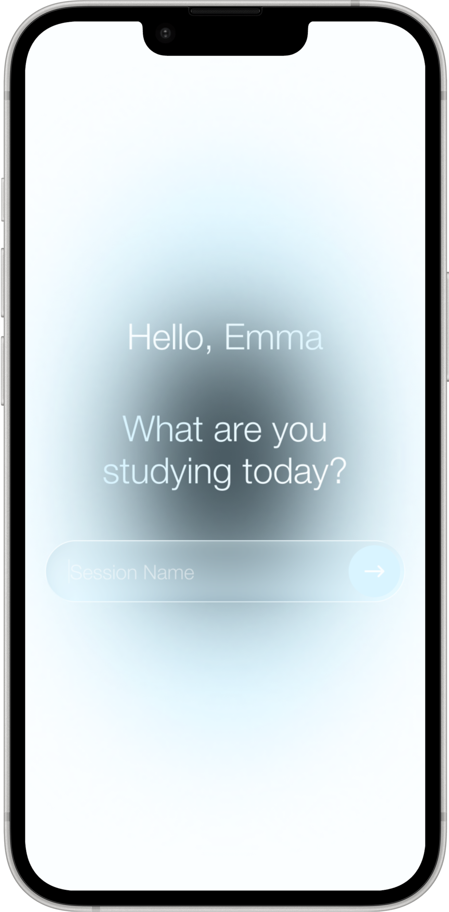
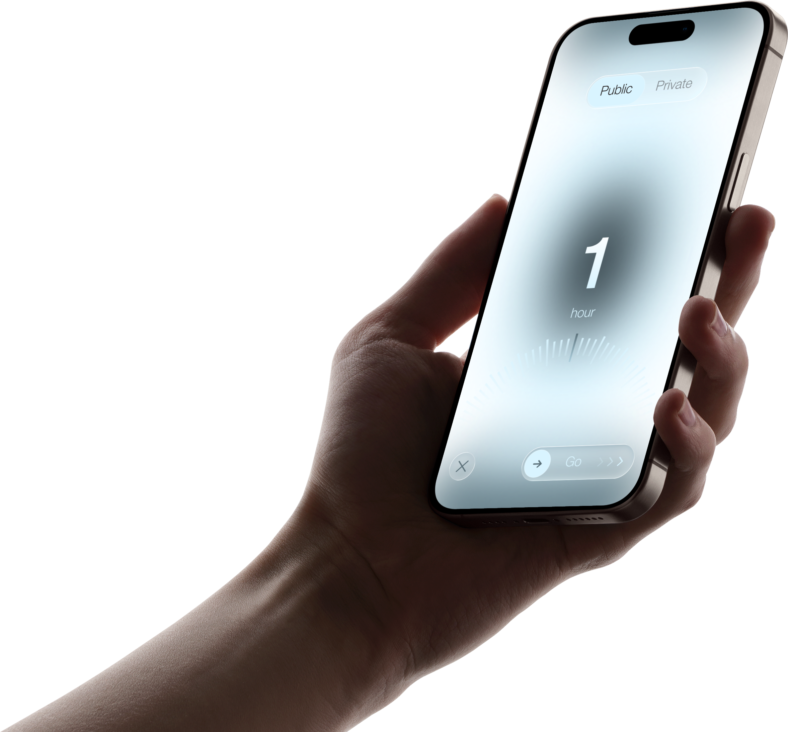
Reflections
I underestimated how much work presence does on its own. Showing that other people are studying, with no message attached and nothing asked of the user, turned out to motivate more reliably than any counter or notification I designed around it.
Most of the difficult decisions were about restraint: what to leave off the timer screen, how often to celebrate, and how to handle a broken streak without punishing anyone for it. The app had to stay calm enough to sit open next to someone's notes for three hours and still be worth returning to the next day.
If I picked this up again I would spend the time on the map's quieter states. Study hotspots over the course of a day, quiet hours, friends who are about to finish. There is a layer of social information there that I only sketched.